Japan / Hiroshima / Jinseikogen
Jinseikogen, Hiroshima: things to do, food and stays
Jinseikogen · Hiroshima
Jinseikogen
Highlighted on the Hiroshima map.

Stay
阿下迎賓館
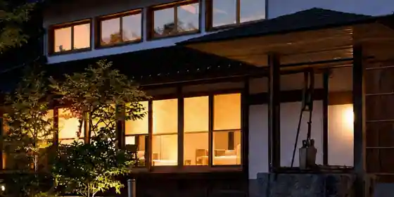
A Shita Geihinkan
Inn in Ashita, Jinseikogen with a renovated traditional house.
光信寺の湯 ゆっくら
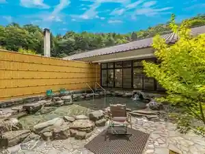
Mitsunobu Tera No Yu Yukkura
TRAILER INN 182
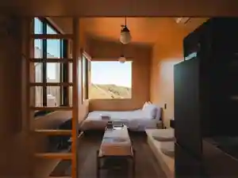
TRAILER INN 182
Inn in Sakasegawa, Jinseikogen with a quiet countryside setting.
神石高原ティアガルテン
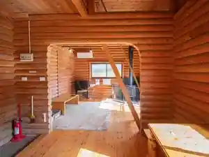
Jinsekikogen Teiagaruten
Inn in Kamitoyomatsu, Jinseikogen with pet-friendly rooms and a quiet countryside setting.
Dining
さんわ182ステーション
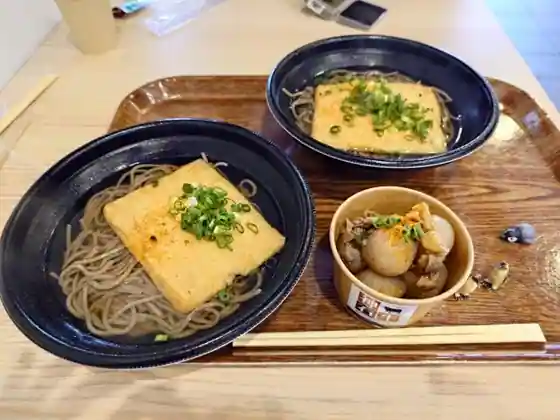
Sanwa 182 Station
182CAFE
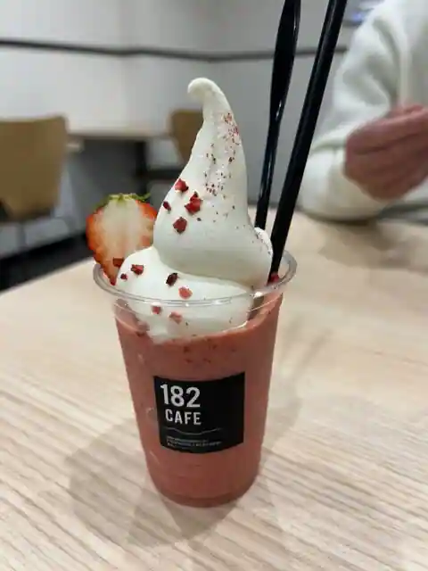
182CAFE
丈
Take
雪花亭
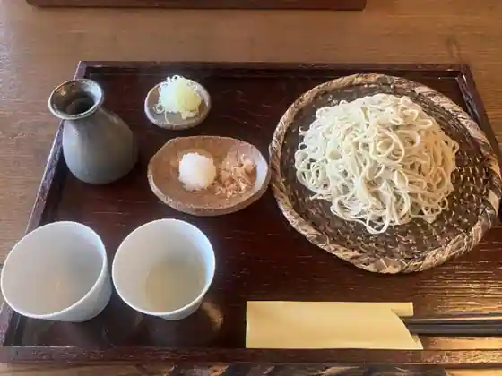
Sekka Tei
ぬく森
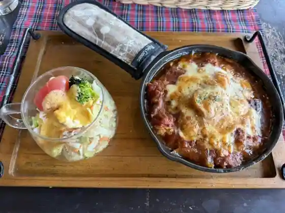
Nuku Mori
高原の風
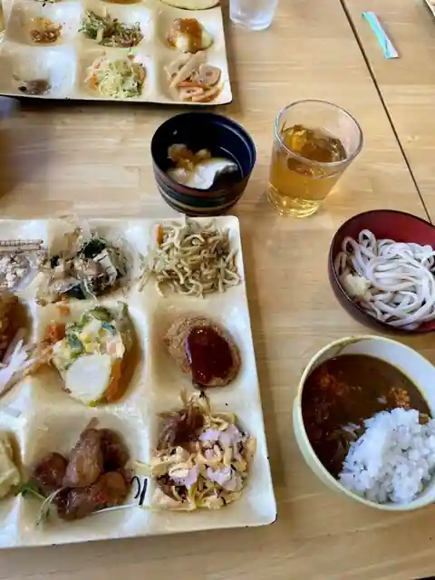
Kogen No Kaze
オオカミブレッド
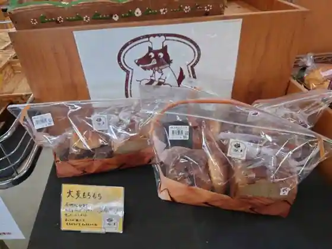
Okamibureddo
ティアガルテンカフェ
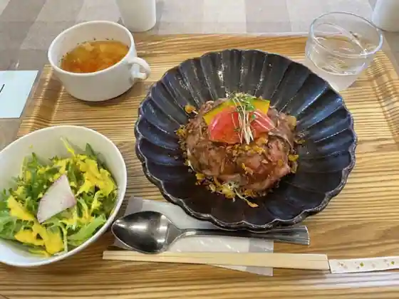
Teiagaruten Cafe
たまちゃん
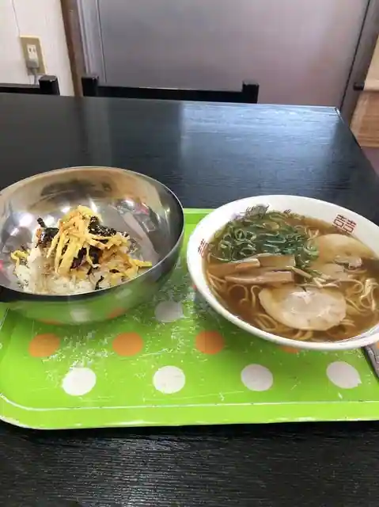
Tamachan
峠の茶屋
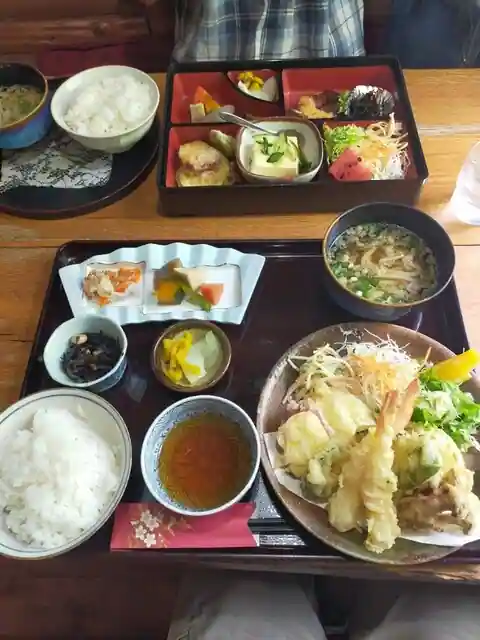
Toge No Chaya
COHAN CAFE
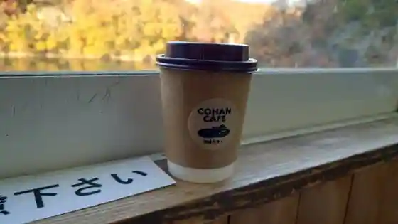
COHAN CAFE
レストラン帝釈の里
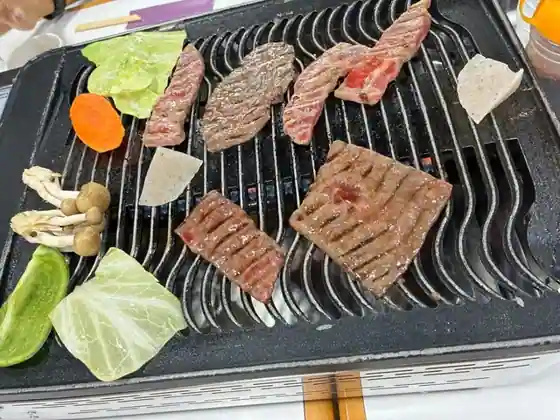
Restaurant Taishaku No Sato
手抜きうどん
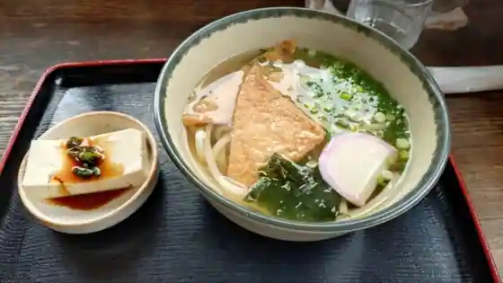
Tenuki Udon
ちろりん村
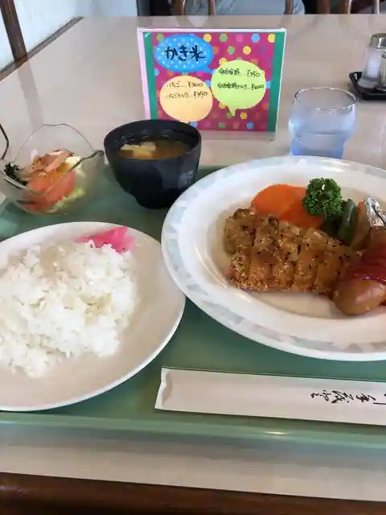
Chirorin Mura
門花亭
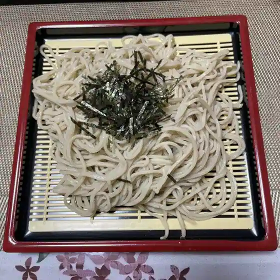
Mon Hana Tei
GARDEN mimuracoffee
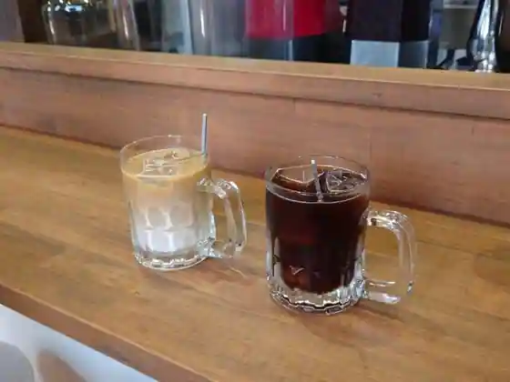
GARDEN mimuracoffee
ロティ ハラパン
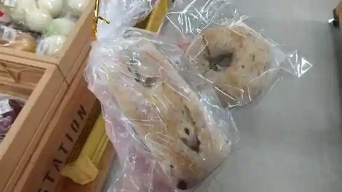
Rotei Hara Bakery
森の花屋さん
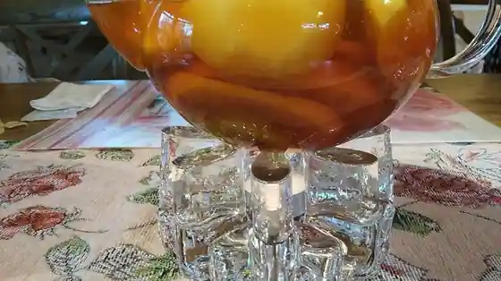
Mori No Hanaya San
農家喫茶 だんばら
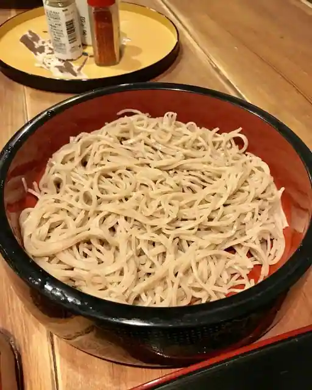
Noka Kissa Danbara
紅葉会館
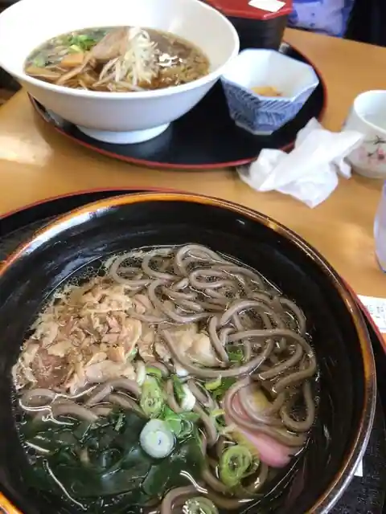
Koyo Kaikan
山里の餅 やまうち
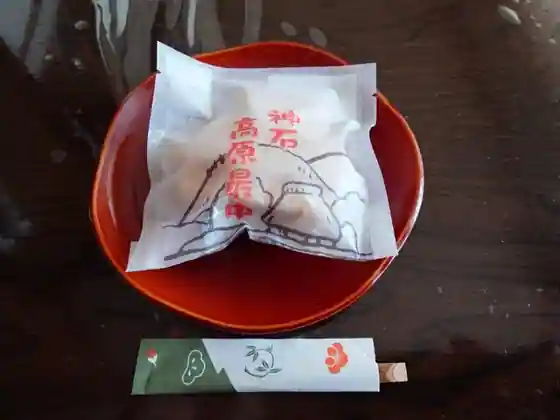
Yamazato No Mochi Yamauchi
Sights
Jinseikogen Teiagaruten
Toyomatsu Kami Hikoki Tawa
Roadside Station Sanwa 182 Suteshon
Taishakukyo Shinryu Mizumi
Taishakukyo Sukora Highlands